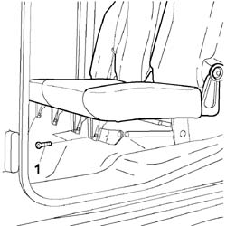
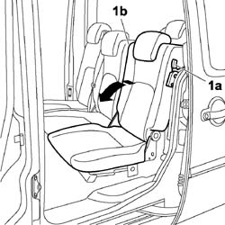
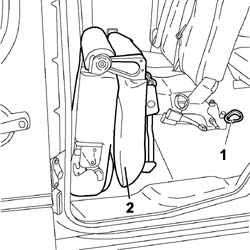
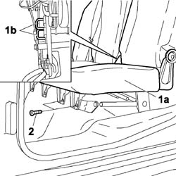

7050A02 SIDE REAR INDIVIDUAL SEAT (one), left or right - R.R.
- Path
- Procedures > 70 FITTINGS > 7050 REAR SEATS > 7050A rear seat assembly > 7050A02 SIDE REAR INDIVIDUAL SEAT (one), left or right - R.R.
- Kind
- repair procedure (removal / refitting; the operation number is the code)
- Applies to
- engines: 1.4 8v, 1.6 16v, 1.3 JTD 16V, 1.9 JTD 8V; all production periods
- Interactive page
- https://sloeber94.github.io/elrnDB-fDbl/en/#/2585190
Applies to: engines: 1.4 8v, 1.6 16v, 1.3 JTD 16V, 1.9 JTD 8V; all production periods; only with equipment: 7 seater and Doblò trim level
 Removing
Removing
 Refitting
Refitting1. Undo the front bolts fixing the seat to the bodyshell.

Applies to: engines: 1.4 8v, 1.6 16v, 1.3 JTD 16V, 1.9 JTD 8V; all production periods; only with equipment: 7 seater and Doblò trim level
1. Release seat anchorage lever (1a) and lower backrest (1b).

Applies to: engines: 1.4 8v, 1.6 16v, 1.3 JTD 16V, 1.9 JTD 8V; all production periods; only with equipment: 7 seater and Doblò trim level
1. Operate the seat attachment device control.
2. Remove the single rear side seat from the vehicle.

Applies to: engines: 1.4 8v, 1.6 16v, 1.3 JTD 16V, 1.9 JTD 8V; all production periods; only with equipment: 7 seater and Doblò trim level
Refitting
Removing1. Position the rear side seat (1a) and anchor the central seat attachment (1b).
2. Tighten the front bolts fixing it to the floor to torque.
 | Fastening | Component | Ø | Value (daNm) |
|---|---|---|---|---|
2 | Bolt | FRONT SEAT ASSEMBLY | M8 | 2.4 |
